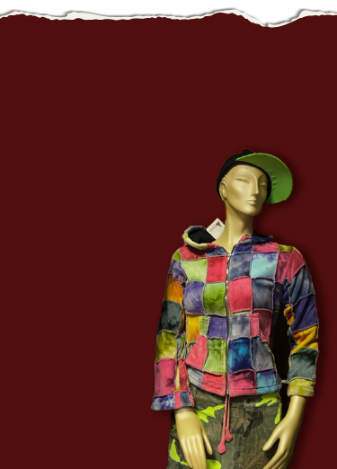

Welkom bij Timeless Threads
Hier deel ik mijn interesse in vintage mode en duurzaamheid. Vintage kleding is niet alleen stijlvol en uniek, maar ook een bewuste keuze voor onze planeet.
Vintage mode
Vintage mode is meer dan alleen kleding, het is een reis terug in de tijd. Het gaat om unieke stukken van minimaal 20 jaar oud, die stijl en karakter combineren met duurzaamheid. Door vintage te dragen, geef je oude kleding een tweede leven en kies je voor een bewuste en originele manier van mode.

Cream Vintage Fashion
Cream is een gezellige vintage modewinkel in het hart van Amsterdam waar je alles vindt, van kleding en schoenen tot accessoires. Zodra je de winkel binnenstap, stap je meteen de vintage wereld binnen, met muren vol posters van oude artiesten en iconische films. Deze winkel is echt een aanrader!